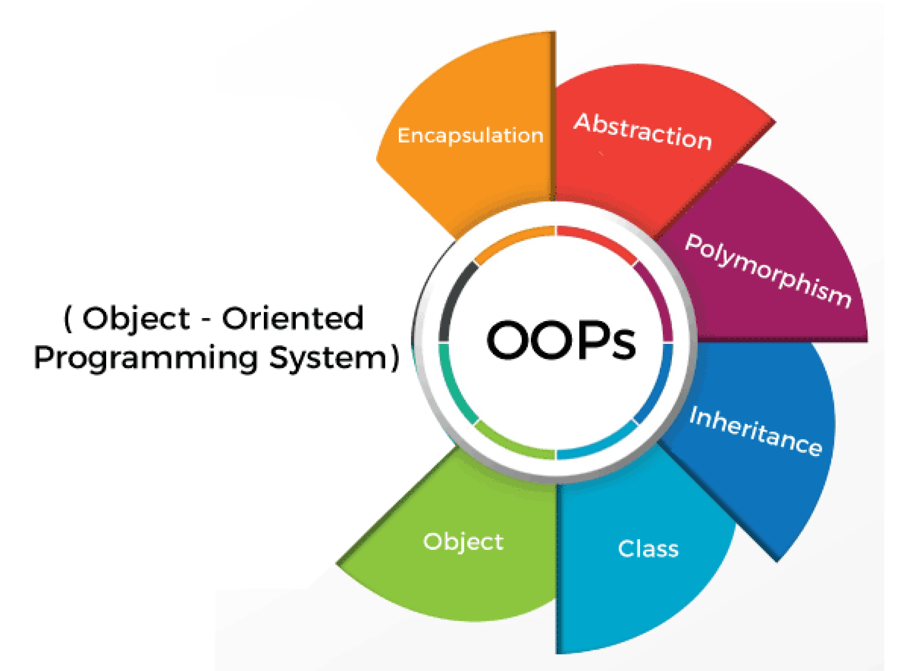
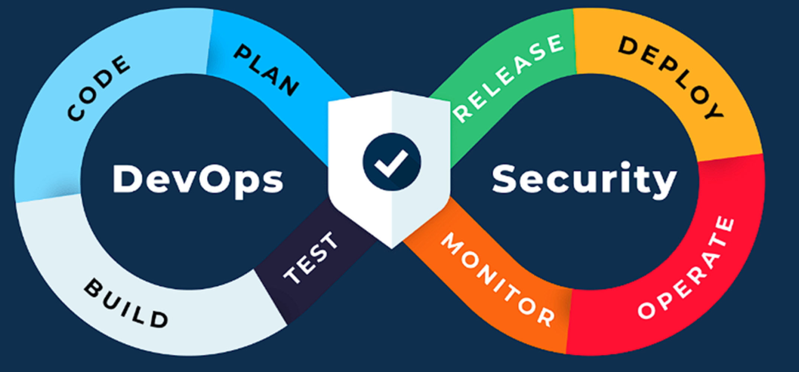

Basic Programming 1
We are developing a Java game called MasterMind, based on
the classic board game. In this game, colored pegs are used
to create a secret code. The available colors are: blue, red,
green, orange, yellow, purple, white, and black.
Game Overview
Objective: The player tries to guess a secret code composed
by another player or by the computer.
Secret Code: Consists of four colors (e.g., blue, blue, green, and purple).
in the form of black and white pegs:
Black peg: Indicates that a color is in the correct position.
White peg: Indicates that a color is correct but in the wrong position.
The player uses this feedback to decode the secret code within a limited number of attempts.
Basic Programming 2
We will continue working on MasterMind with new
information, expanding and improving the game.
Object-Oriented Programming 1
You will become familiar with (and build upon) key aspects of
developing a software application following Object-Oriented
Programming principles:
Reading designs (text and diagrams)
Modifying designs (text and diagrams)
Separating responsibilities between objects
Organizing related code into classes and methods
Applying classes (defining and using them in logic) within
the code
Reading code
Testing and debugging your code

Object-Oriented Programming 2
This module provides an engaging introduction to the
fundamental skills of object-oriented programming (OOP)
with Java and Greenfoot. You will learn how to use and
modify existing program code, a significant advantage of
Java due to the abundance of online examples. Additionally,
you will develop the skill to create structured and reusable code.
Website 1
We are building a website called Pink Goose, using HTML and
CSS to create the structure, design, and styling of the site.
Website 2
We design and create our own website for our personal
portfolio. This can be used when searching for a job or
starting a business to showcase what we can do and have
created. Ultimately, you can use this website as an example
for your employer. For instance, if a client requests a similar
website, your employer will know who is best suited to create
such a site.
Web Application 1
In period 3, you will develop a website for a delivery
company, recreating a restaurant of your choice. For this
project, you will use PHP, SQL, JavaScript, HTML, and CSS to
implement the functionality and design of the website.
Web Application 2
You will work in pairs on developing a vacation booking
website as a project. This project is larger in scope and has
more complex objectives than in period 3, but it uses the
same programming languages: PHP, SQL, JavaScript, HTML, and CSS
Basic ICT 1
In Basic ICT 1, you will learn the fundamentals of computers
and networks. You will be introduced to hardware such as
SSDs, motherboards, and computer cases, as well as how
Wi-Fi works and how to connect devices to it. Additionally,
you will gain insight into IP addresses and their function.
You will also explore the differences between hardware and
software and their relevance to your studies. The course
provides an introduction to networks and connections,
knowledge that will be useful later in your education.
Basic ICT 2
In this course, you will learn how to secure both your own
information and that of others. You will discover how to
evaluate whether something is reliable or unreliable and
which methods you can use to better protect yourself in the online world.
Devops 1 and 2
Solution-oriented problem solving regarding: e.g. planning, version management, Docker.

Project
In Basic ICT 1 you will learn the basics of computers and
networks. You will be introduced to hardware such as SSDs,
motherboards and computer cases, and you will learn how
Wi-Fi works and how to connect devices to it. You will also
gain insight into IP addresses and their function.
In addition, you will discover the differences between
hardware and software and how these are relevant to your
education. The course also offers an introduction to networks
and connections, knowledge that will come in handy later in
your studies.
ITstudy
The teacher determines whether you need extra guidance,
for example if you have difficulty learning or are behind in
certain subjects.
HTML, CSS, PHP, SQL,
JAVA en JavaScript
HTML. What is HTML used for: to place and display elements
on your website.
CSS. What is CSS used for: with CSS you can design and
position the elements of your website page down to the pixel.
PHP, What is PHP used for: when creating dynamic websites
and web applications.
SQL, What is SQL used for: with an SQL database you can
change the schema in real time.
JAVA, What is JAVA used for: business software, mobile app
development, web apps, cloud-based applications, games
and IoT applications.
JavaScript. What is JavaScript used for: a scripting language
that allows you to make web pages interactive.
Math
English
Dutch
Citizenship
Sport op Maat